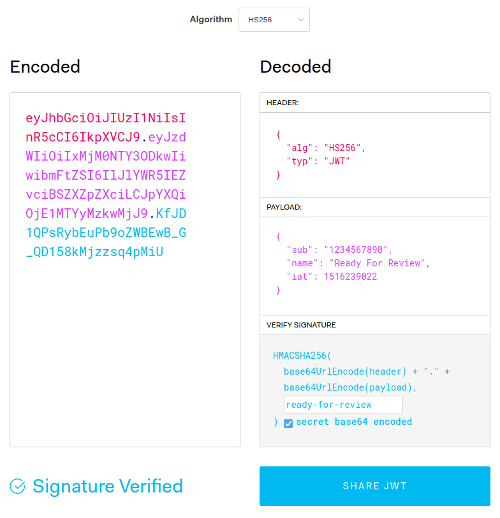

JSON Web Token (JWT) is an open standard (RFC 7519) that defines a compact and safe way to transmit information between two parties as a JSON object. This object can optionally be signed and encrypted, signed tokens can verify the integrity of the content whitin it, while encrypted tokens hide that information form others, making the communication verifiable, reliable and secret.
The most common usage of JWT is for authorization and information exchange.
* Authorization: After the user is authenticated, the server can generate a JWT with claims about his identity and authorization levels, such as "logged in as administrator", the client will receive this token and can include it in every further request, allowing it to access services and resources permitted with that token. This is very useful in a Single Sing On context, with a central identity provider and services distributed across different domains.
* Information Exchange: Signed JWT allows to transmit information between parties in a secure and trusted way, you can verify the sender and the integrity of the message, making sure the content hasn't been tampered.
JSON Web Tokens consist of three parts encoded separatedly using the Base64url Encoding (RFC 4648) and concatenated using periods, therefore a JWT typically looks like the following, line breaks were introduced to improve readability:
eyJhbGciOiJIUzI1NiIsInR5cCI6IkpXVCJ9.
eyJsb2dnZWRJbkFzIjoiYWRtaW4iLCJpYXQiOjE0MjI3Nzk2Mzh9.
gzSraSYS8EXBxLN_oWnFSRgCzcmJmMjLiuyu5CSpyHI
These three parts are the Header, Payload and Signature, which are encoded and concatenated as header.payload.signature
The header consists of two entries that identifies which algorithm is used to generate the signature and the type of the token. Typical cryptographic algorithms used are HMAC with SHA-256 (HS256) and RSA Signature with SHA-256 (RS256). The JSON Web Altorithms (RFC 7518) registers these and many others to be used for both authentication and encryption.
{
"alg": "HS256",
"typ": "JWT"
}
The "typ" parameter is used by JWT applications when objects that are not JWTs could also be present.
The middle part of the token is the payload, which contains the claims, these are statements about an entity and additional data. Note that the claims contained in the payload of a JWT is readable by anyone. If the token is signed it will be protected against tampering. Do not put sensible information in the payload or header elements of a JWT unless is encrypted.
{
"sub": "1234",
"name": "Evil Admin"
"role": "administrator"
}
There are three types of claims: registered, public and private.
registered: The JWT specification defines seven Registered Claim Names (RFC7519#Section-4.1) which are the standard fields commonly included in tokens, these are not mandatory but recommended, to provide a set of useful, interoperable claims. These are:
"iss": Issuer, identifies who issued the JWT.
"sub": Subject, the claims in a JWT are normally statements about the subject.
"aud": Audience, identifies the recipients that the JWT is intended for.
"exp": Expiration Time, identifies the expiration time on or after which the JWT MUST NOT be accepted for processing.
"nbf": Not Before, identifies the time before which the JWT MUST NOT be accepted for processing.
"iat": Issued At, identifies the time at which the JWT was issued.
"jti": JWT ID, provides a unique identifier for the JWT.
public: These can be defined at will but to avoid collisions they should be registered in the IANA JSON Web Token Registry. To name a few:
"name": full name.
"zoneinfo": time zone.
"locale": locale.
"sid": session ID.
private: These are custom claims created to share information between parties that agree on using them. Examples:
"logged_in_as": authorization level of the subject, ie: Administrator.
"favourite_colur": Evil Red.
"os": operative system, ie: Linux.
"preferred_editor": VIM, the answer is always VIM.
The signature securely validates the token. It's calculated by encoding the header and the payload using Base64url Encoding and concatenating the two together with a period separator. That string is then run through the cryptographic algorithm specified in the header:
let signature = HS256(
base64UrlEncode(header) + '.' + base64UrlEncode(payload),
secret
);
The signature is used to verify that the message hasn't been adulterated in transit and if signed with a private key, it can also verify the legitimacy of the sender.
When the user successfully logs in their credentials, a JWT will be returned. Whenever this user wants to access a protected route or resource, the user agent should send the JWT, typically in the Authorization header using the Bearer schema. The content of the header should look like the following:
Autorization: Bearer <token>
The server will check for a valid JWT in the Authorization header, and if it's present, the user will be allowed to access protected resources.
You can use jwt.io debugger to decode, verify and generate JWTs.

JWTs are a great solution for authorization when you have a complex family of services, with a central identity provider and API for data access and client applications hosted in different domains. Another possible usage is to have short-lived JWTs or one-time JWTs to provide access to unregistered third parties to protected resources. It is a very versatile technology.
References:
0: https://datatracker.ietf.org/doc/html/rfc7519
1: https://www.iana.org/assignments/jwt/jwt.xhtml
2: https://en.wikipedia.org/wiki/JSON_Web_Token
3: https://jwt.io/introduction
4: https://jwt.io/#debugger-io
Until the next one.